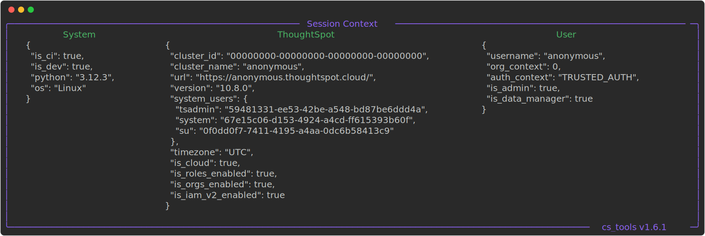

v1.6.0
 The V2 (API) Release
The V2 (API) Release
Minimum Supported ThoughtSpot version
The minimum supported ThoughtSpot version has been raised to 10.0.1
Minimum Supported Python version
The minimum supported python version has been raised to 3.9.2
Check out the highlights of our latest CS Tools release!
CS Tools is a suite of tools which connects to your ThoughtSpot cluster and helps give you magic powers.
We do this by wrapping the ThoughtSpot REST APIs, combining them in unique ways, and then giving you, the user, control on how to cast those spells.
 We're VERY excited to announce that CS Tools is now primarily implemented from the
V2 REST API endpoints!
We're VERY excited to announce that CS Tools is now primarily implemented from the
V2 REST API endpoints!
When ThoughtSpot released its Embedded product family, the CS Tools team and got together with the ThoughtSpot Product team to help guide and shape the API Endpoints that are available in V2.
ThoughtSpot 10.0.0 marked 18 months of stability in the V2 REST APIs, and so we decided it was time to finally move over all our codebase to match!
Head on over to the CLI reference page to see all the commands you can issue with CS Tools.
This page is a live reference of all the tools you can issue in the latest release.
Most of the tools perform bulk management of metadata or users. Wherever a destructive action could take place,
you'll find a Confirmation Prompt and --no-prompt option to skip it.

One of the larger points of friction we've heard from customers over the past year is how difficult it is to get started with CS Tools.
The tutorial, while helpful, was too long! 😴 We've listened and shortened it to be "need to know".
Additionally, we've given a stronger indication of what context your configuration was created under, and if it was even successful at all. With ThoughtSpot Orgs becoming mainstream, it's really important to understand what's going on under the hood.
cs_tools config create --config dogfood --url https://anonymous.thoughtspot.cloud --username anonymous
Successful config output

Finally, this release brings us new capability of running the tools pretty much anywhere.
We've documented support for common CI platforms like GitHub Actions, GitLab CI/CD, Docker, and more!
Breaking Changes
If you wish to downgrade back to 1.5.12 until you are ready for these breaking changes, you may call the install
script below with --beta v1.5.12 appended.
Downgrade Command
Find the copy button to the right of the code block.
The TS_SHARING_ACCESS table previously did not identify column level security, even if you
used the --include-column-access option on the CLI. Whoops! 
In order to accept the new data type, you can choose to issue a DROP TABLE TS_SHARING_ACCESS and allow CS
Tools to recreate it, or you can issue an ALTER TABLE ADD COLUMN share_type VARCHAR command.
The TS_METADATA_OBJECT incorrectly declares optionality on the TS_METADATA_OBJECT. Not all objects are
candidates to have Spotter enabled on them, and this column needs to hold TRUE | FALSE | NULL in order to
accurately express that semantic.
In order to accept the change in optionality, you can choose to issue a DROP TABLE TS_METADATA_OBJECT and
allow CS Tools to recreate it, or you can issue an ALTER TABLE TS_METADATA_OBJECT ALTER COLUMN is_sage_enabled
SET NOT NULL command.
This tool allows you to handle TML in bulk (exports and imports), while also encouraging strong CI/CD workflows. Over the years, the ThoughtSpot team has worked to refine the capabilities in the platform to help alleviate many of the issues customers see with CI/CD and ThoughtSpot.
The Deploy with GitHub and Deploy with TML APIs reflect many of those
attempts to consolidate the flows as much as possible. With CS Tools 1.6.0 , we align both the scriptability
and git core interfaces of commit (aka tml/export) and deploy (aka tml/import + mapping).
 Due to this,
Due to this, scriptability customers will need to re-export all of their
TML to align to the improved structure!
Please call cs_tools tools scriptability checkpoint (an alias for scriptability commit) on a new directory
in order to see the differences between 1.5.x and 1.6.x.


The Falcon Syncer has been updated to restrict to configurations using Basic Authnetication flow only.
Previously, CS Tools had implemented support for Trusted Auth and Bearer Token authentication with Falcon. These are not reliable authentication methods when in a multi-node configuration with Falcon and introduced interesting behavior.
Open up Windows Terminal or Powershell.
Find the copy button to the right of the code block.
powershell -ExecutionPolicy ByPass -c "IRM https://thoughtspot.github.io/cs_tools/install.py | python - --reinstall"
* changing the execution policy allows running a script from the internet
To open Powershell
Press the Win key, type Powershell, then hit Enter
Open up a new Terminal window.
Find the copy button to the right of the code block.
command not found: python3
If you see this error in your terminal, try using python instead of python3 above.
Proceed with caution! 
CS Tools can run pretty much anywhere! We strongly recommend against running this on your production ThoughtSpot software cluster.
Find the copy button to the right of the code block.
command not found: python3
If you see this error in your terminal, try using python instead of python3 above.
If you want to run CS Tools from a serverless environment, skip the install script and instead install the python package directly.
actions-workflow.yaml
name: Extract Metadata with CS Tools.
on:
workflow_dispatch:
inputs:
cs_tools_version:
description: "The CS Tools version to target for a manual run."
required: false
type: string
schedule:
# Runs every day at 5:20 AM UTC
- cron: "20 5 * * *"
jobs:
extract_data_from_thoughtspot:
runs-on: ubuntu-latest
env:
# CS TOOLS IS COMMAND LINE LIBRARY WRAPPING TS APIS
# https://thoughtspot.github.io/cs_tools/
CS_TOOLS_VERSION: ${{ github.event_name == 'workflow_dispatch' && inputs.cs_tools_version || 'v1.6.0' }}
CS_TOOLS_THOUGHTSPOT__URL: ${{ secrets.THOUGHTSPOT_URL }}
CS_TOOLS_THOUGHTSPOT__USERNAME: ${{ secrets.THOUGHTSPOT_USERNAME }}
CS_TOOLS_THOUGHTSPOT__SECRET_KEY: ${{ secrets.THOUGHTSPOT_SECRET_KEY }}
# COMMON PARAMETERS FOR THE SNOWFLAKE SYNCER
# https://thoughtspot.github.io/cs_tools/syncer/snowflake/
DECLARATIVE_SYNCER_SYNTAX:
"\
account_name=${{ secrets.SNOWFLAKE_ACCOUNT }}\
&username=${{ secrets.SNOWFLAKE_USERNAME }}\
&secret=${{ secrets.SNOWFLAKE_PASSWORD }}\
&warehouse=${{ secrets.SNOWFLAKE_WAREHOUSE }}\
&role=${{ secrets.SNOWFLAKE_ROLE }}\
&database=${{ secrets.SNOWFLAKE_DATABASE }}\
&schema=${{ secrets.SNOWFLAKE_SCHEMA }}\
&authentication=basic\
"
steps:
# SETUP PYTHON.
- name: Set up Python
uses: actions/setup-python@v5
# UPDATE PIP.
- name: Ensure pip is up to date.
run: python -m pip install --upgrade pip
# INSTALL A SPECIFIC VERSION OF cs_tools.
- name: Install a pinned version of CS Tools
run: python -m pip install "cs_tools[cli] @ https://github.com/thoughtspot/cs_tools/archive/${{ env.CS_TOOLS_VERSION }}.zip"
# ENSURE SYNCER DEPENDENCIES ARE INSTALLED.
# found in: https://github.com/thoughtspot/cs_tools/blob/master/sync/<dialect>/MANIFEST.json
- name: Install a pinned version of CS Tools
run: python -m pip install "snowflake-sqlalchemy >= 1.6.1"
# RUNS THE searchable metadata COMMAND.
# https://thoughtspot.github.io/cs_tools/tools/searchable
#
# THE CLI OPTION --config ENV: TELLS CS TOOLS TO PULL THE INFORMATION FROM ENVIRONMENT VARIABLES.
- name: Refresh Metadata from ThoughtSpot
run: |
cs_tools tools
searchable metadata
--syncer 'snowflake://${{ env.DECLARATIVE_SYNCER_SYNTAX }}&load_strategy=TRUNCATE'
--config ENV:
.gitlab-ci.yml
variables:
# CS TOOLS IS COMMAND LINE LIBRARY WRAPPING TS APIS
# https://thoughtspot.github.io/cs_tools/
CS_TOOLS_VERSION: "v1.6.0"
CS_TOOLS_THOUGHTSPOT__URL: ${THOUGHTSPOT_URL}
CS_TOOLS_THOUGHTSPOT__USERNAME: ${THOUGHTSPOT_USERNAME}
CS_TOOLS_THOUGHTSPOT__SECRET_KEY: ${THOUGHTSPOT_SECRET_KEY}
# COMMON PARAMETERS FOR THE SNOWFLAKE SYNCER
# https://thoughtspot.github.io/cs_tools/syncer/snowflake/
DECLARATIVE_SYNCER_SYNTAX:
"\
account_name=${SNOWFLAKE_ACCOUNT}\
&username=${SNOWFLAKE_USERNAME}\
&secret=${SNOWFLAKE_PASSWORD}\
&warehouse=${SNOWFLAKE_WAREHOUSE}\
&role=${SNOWFLAKE_ROLE}\
&database=${SNOWFLAKE_DATABASE}\
&schema=${SNOWFLAKE_SCHEMA}\
&authentication=basic\
"
# WORKFLOW CAN BE TRIGGERED MANUALLY OR BY SCHEDULE
workflow:
rules:
- if: $CI_PIPELINE_SOURCE == "schedule"
- if: $CI_PIPELINE_SOURCE == "web"
extract_data_from_thoughtspot:
image: python:3.12-slim
script:
# UPDATE PIP.
- python -m pip install --upgrade pip
# INSTALL A SPECIFIC VERSION OF cs_tools.
- python -m pip install "cs_tools[cli] @ https://github.com/thoughtspot/cs_tools/archive/${CS_TOOLS_VERSION}.zip"
# ENSURE SYNCER DEPENDENCIES ARE INSTALLED.
# found in: https://github.com/thoughtspot/cs_tools/blob/master/sync/<dialect>/MANIFEST.json
- python -m pip install "snowflake-sqlalchemy >= 1.6.1"
# RUNS THE searchable metadata COMMAND.
# https://thoughtspot.github.io/cs_tools/tools/searchable
#
# THE CLI OPTION --config ENV: TELLS CS TOOLS TO PULL THE INFORMATION FROM ENVIRONMENT VARIABLES.
- >-
cs_tools tools
searchable metadata
--syncer "snowflake://${DECLARATIVE_SYNCER_SYNTAX}&load_strategy=UPSERT"
--config ENV:
# RUNS EVERY DAY AT 5:20 AM UTC
.schedule:
cron: "20 5 * * *"
azure-pipelines.yml
variables:
CI: true
# CS TOOLS IS COMMAND LINE LIBRARY WRAPPING TS APIS
# https://thoughtspot.github.io/cs_tools/
CS_TOOLS_VERSION: 'v1.6.0'
CS_TOOLS_THOUGHTSPOT__URL: $(THOUGHTSPOT_URL)
CS_TOOLS_THOUGHTSPOT__USERNAME: $(THOUGHTSPOT_USERNAME)
CS_TOOLS_THOUGHTSPOT__SECRET_KEY: $(THOUGHTSPOT_SECRET_KEY)
# COMMON PARAMETERS FOR THE SNOWFLAKE SYNCER
# https://thoughtspot.github.io/cs_tools/syncer/snowflake/
DECLARATIVE_SYNCER_SYNTAX: >-
account_name=$(SNOWFLAKE_ACCOUNT)
&username=$(SNOWFLAKE_USERNAME)
&secret=$(SNOWFLAKE_PASSWORD)
&warehouse=$(SNOWFLAKE_WAREHOUSE)
&role=$(SNOWFLAKE_ROLE)
&database=$(SNOWFLAKE_DATABASE)
&schema=$(SNOWFLAKE_SCHEMA)
&authentication=basic
schedules:
# Runs every day at 5:20 AM UTC
- cron: '20 5 * * *'
displayName: Daily metadata sync
branches:
include:
- main
always: true
# DEFINE MANUAL TRIGGER CAPABILITY
trigger: none # DISABLE CONTINUOUS INTEGRATION TRIGGER
pr: none # DISABLE PULL REQUEST TRIGGER
# ALLOW MANUAL TRIGGER FROM AZURE DEVOPS UI
resources:
repositories:
- repository: self
pool:
vmImage: 'ubuntu-latest'
jobs:
- job: extract_data_from_thoughtspot
displayName: 'Extract Data from ThoughtSpot'
steps:
- task: UsePythonVersion@0
inputs:
versionSpec: '3.12'
addToPath: true
- script: |
# UPDATE PIP
python -m pip install --upgrade pip
# INSTALL A SPECIFIC VERSION OF cs_tools
python -m pip install "cs_tools[cli] @ https://github.com/thoughtspot/cs_tools/archive/$(CS_TOOLS_VERSION).zip"
# ENSURE SYNCER DEPENDENCIES ARE INSTALLED
python -m pip install "snowflake-sqlalchemy >= 1.6.1"
# RUN THE searchable metadata COMMAND
cs_tools tools searchable metadata --syncer "snowflake://$(DECLARATIVE_SYNCER_SYNTAX)&load_strategy=UPSERT" --config ENV:
displayName: 'Extract Metadata with CS Tools.'
Dockerfile
# CS TOOLS IS COMMAND LINE LIBRARY WRAPPING TS APIS
# https://thoughtspot.github.io/cs_tools/
docker build --build-arg CS_TOOLS_VERSION=v1.6.0 -t cs-tools-image:1.0.0 .
# COMMON PARAMETERS FOR THE SNOWFLAKE SYNCER
# https://thoughtspot.github.io/cs_tools/syncer/snowflake/
docker run `
-e CS_TOOLS_THOUGHTSPOT__URL="" `
-e CS_TOOLS_THOUGHTSPOT_USERNAME="" `
-e CS_TOOLS_THOUGHTSPOT_SECRET_KEY="" `
-e DECLARATIVE_SYNCER_SYNTAX="" `
cs-tools-image:1.0.0
# BASE DISTRIBUTION MUST INCLUDE PYTHON + PIP.
FROM python:3.12-slim
# METADATA
LABEL version="1.0.0"
LABEL description="ThoughtSpot CS Tools container"
LABEL maintainer="https://github.com/thoughtspot/cs_tools/discussions"
# CS TOOLS IS COMMAND LINE LIBRARY WRAPPING TS APIS
# https://thoughtspot.github.io/cs_tools/
ARG CS_TOOLS_VERSION="v1.6.0"
ENV CS_TOOLS_VERSION=${CS_TOOLS_VERSION}
# AVOID PROMPTS FROM APT
ENV DEBIAN_FRONTEND=noninteractive
# INSTALL GIT (NEEDED FOR PIP INSTALL FROM GITHUB)
RUN apt-get update && apt-get install -y \
git \
&& apt-get clean \
&& rm -rf /var/lib/apt/lists/*
# UPDATE PIP.
RUN python3 -m pip install --upgrade pip
# INSTALL A SPECIFIC VERSION OF cs_tools.
RUN python3 -m pip install "cs_tools[cli] @ https://github.com/thoughtspot/cs_tools/archive/${CS_TOOLS_VERSION}.zip"
# SET THE WORKING DIRECTORY
WORKDIR /app
# RUNS THE searchable metadata COMMAND.
# https://thoughtspot.github.io/cs_tools/tools/searchable
#
# THE CLI OPTION --config ENV: TELLS CS TOOLS TO PULL THE INFORMATION FROM ENVIRONMENT VARIABLES.
CMD ["sh", "-c", "cs_tools tools searchable metadata --syncer \"snowflake://${DECLARATIVE_SYNCER_SYNTAX}&load_strategy=UPSERT\" --config ENV:"]
Untitled.ipynb
### Install CS Tools
Change the `v1.6.0` for any version or branch you want, but the latest version has all the bells as whistles.
### While [CS Tools](https://thoughtspot.github.io/cs_tools/) is a CLI, we can still use it programmatically.
The simplest way to specify your config is to set environment variables.
os.environ["CS_TOOLS_THOUGHTSPOT__URL"] = ...
os.environ["CS_TOOLS_THOUGHTSPOT__USERNAME"] = ...
os.environ["CS_TOOLS_THOUGHTSPOT__SECRET_KEY"] = ...
# os.environ["CS_TOOLS_THOUGHTSPOT__PASSWORD"] = ...
# os.environ["CS_TOOLS_THOUGHTSPOT__TOKEN"] = ...
### Common Parameters for the [Snowflake Syncer](https://thoughtspot.github.io/cs_tools/syncer/snowflake/)
__Load Strategies__
- `UPSERT` _update or insert incoming rows_
- `TRUNCATE` _first delete all rows, then insert incoming rows_
- `APPEND` _only insert, without regarding primary key_
UPSERT_SYNCER_CONF = {
"account_name": ...,
"username": ...,
"secret": ...,
"warehouse": ...,
"role": ...,
"database": ...,
"schema": ...,
"authentication": "basic",
"load_strategy": "UPSERT",
}
syncer_def = "&".join(f"{k}={v}" for k, v in UPSERT_SYNCER_CONF.items())
- CS Tools is now primarily implemented from the ThoughtSpot V2 REST API
tools bulk-deleter from-tagdelete all objects which are marked with a specific tagtools bulk-sharing from-tagshare all objects which are marked with a specific tag to any number of groupstools user-management transfer --tagsassign the author of all objects which are marked with a specific tagtools seachable audit-logsconsume and store the Audit Logs APItools seachable tmlstore your TML in a syncer, or parse it with database-native JSON functions- Faster
INSERTandUPSERTperformance on SQLite and Databricks Syncers - Excel Syncer now supports appending a suffix to the filename, to help avoid overwriting existing files
- Mock Syncer added to report Table DDL that is generated from commands which support the
--syncerinterface - All commands now properly report OS status codes (
0 = success,1 = failure)
- Known errors (
exceptions.CSToolsError) have been revamped to include more user-friendly messages and mitigations tools scriptabilityrewritten to align to more with thetools gitinterface
- Add
TS_SHARING_ACCESS.share_type (VARCHAR)totools searchable metadata DatabaseSyncerswhich followPUT FILE -> COPY/MERGE INTOworkflow now support column header reording / redefinition- Column headers are now parsed appropriately on Excel Syncer (#192)
- All
DATETIMEfields in extracted data are now converted to UTC, regardless of the Cluster's timezone
- V1 REST API endpoints are in a deprecated cycle or replaced in favor of V2
- Opt-in callhome analytics / metadata
- Falcon Syncer reliably only supports Basic Auth, other authentication methods are removed
- Added a CONTRIBUTING guide with CS Tools development setup
- Replaced
venv+pipbootstrapping and Virtual Environment management withuventirely - Replaced
cs_tools.api.middlewareswith a leanercs_tools.api.client + cs_tools.api.workflowslayer (thanks V2!) - All REST API calls are now made asynchronously with
httpx, with complementary async-to-sync translators inutils.py - Moved Documentation generators from
cs_tools.md_exttodocs/hooks/*.py - Refreshed Documentation to be leaneer and more generated instead of manual maintenance